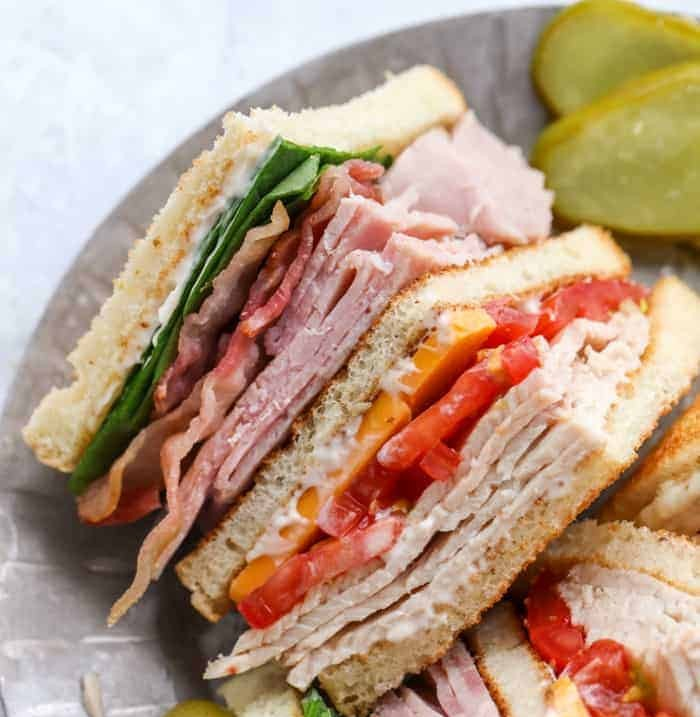

Country Club
>
Description
This sandwich has it's origins in Country clubs all across america but how I first learn how to make it was
at loafin' joe's. The sandwich is topped with american, mozzarella, and bacon. Turkey, lettuce, tomato and
mayo complete the sandwich.
Ingredients
- Bread
- Turkey
- Bacon
- American cheese
- Mozzarella cheese
- Lettuce
- Tomato
- Mayo
Steps : Making the sandwich
- Depending on the choice of bread you should either cut the bread in half or get 2 slices of cut bread
- Place the turkey on the bottom of the sandwich
- Place the American cheese on the top of the sandwich first
- Cover the American cheese with the mozzarella cheese to prevent the american cheese from burning
- Place precooked Bacon on top of the cheeses
- Cook @ 400 degrees F for 7 minutes with both slices open
- Add your preferred amount of Mayo, lettuce and tomato
- Enjoy your Country Club!